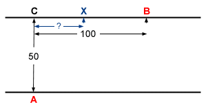

Puzzle 5: Optimaler Ruderer

Mathias möchte möglichst schnell von seinem Standort A auf der einen Seite
eines Flusses zum Ort B auf der andern Seite des Flusses gelangen.
B ist 100m von
dem A genau gegenüberliegenden Punkt C entfernt. Mathias hat in A ein Ruderboot zur
Verfügung, mit dem er eine Geschwindigkeit von 5km/h erreicht. Zu Fuss ist er mit
10km/h unterwegs. Die Flussbreite beträgt 50m.
Wie weit ist derjenige Punkt X, den
Mathias beim Rudern anvisieren muss, vom Punkt C entfernt? Die Flussgeschwindigkeit
muss nicht berücksichtigt werden.
©1997 - 2026 www.mathematik.ch |🔍